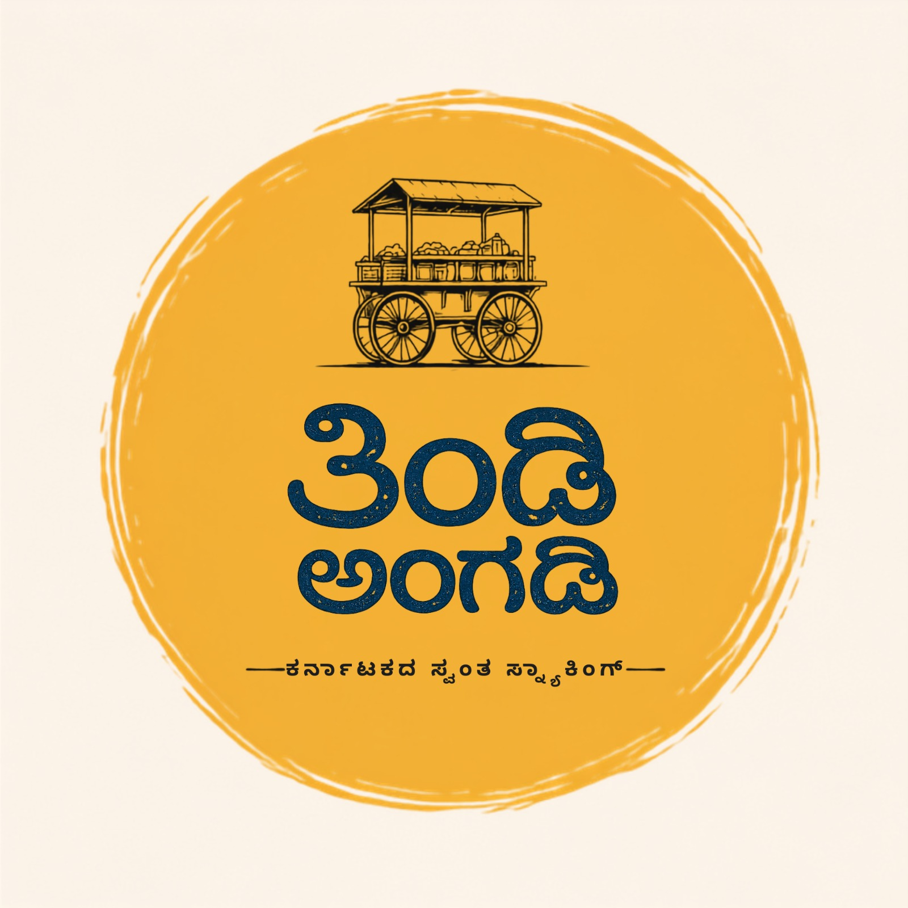

Tradition
Keep what feels true. Let the familiar remain familiar.
01Thindi Angadi

A venture by Sri Aadi Subramanya Group
Explore Thindi Angadi →
A taste of where we come from
Thindi Angadi begins with the neighbourhood food stall: steam before sunrise, brass vessels, a shared bench and the comfort of a plate that needs no introduction.
We keep that spirit close while giving it a considered new home. The food is familiar. The standard is deliberate.
The board
A focused offering shaped by the warmth of a Karnataka morning.
A warm, savoury classic for the first plate of the day.
More than food
The angadi is a meeting point: a place where a plate carries memory and an ordinary morning can become part of the story.
Keep what feels true. Let the familiar remain familiar.
Respect the ingredient, the method and the moment it is served.
Make room at the table for one more person and one more story.
The visual language
A place for the images that will define Thindi Angadi as it takes shape.
From the Group
A focused venture from Sri Aadi Subramanya Group, shaped around familiar food and considered hospitality.